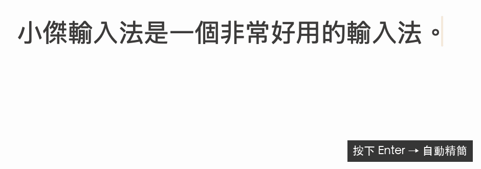

01
天下苦內建輸入法久矣。
一開始只是對原本的輸入法不滿：同音字選錯，打完又得回頭改。「在」和「再」看起來只是小問題，但一天遇到很多次，就會不斷打斷思緒。
在同時用很多 AI Agent 工作的年代，我發現工作效率的瓶頸，竟然變成自己的打字速度。與其繼續忍耐，不如找個更合用的輸入法。
02
找到小麥注音，先有一個好的起點。
研究之後，發現開源社群的小麥注音。它由 OpenVanilla 社群維護，以 MIT 授權釋出，操作方式也很順手。小傑就是從小麥分支出來的。
小麥的詞庫引擎依各個詞的分數找出整句組合。這個方法很輕巧，但遇到必須理解前後文的同音字，還是會需要手動選字。我的方向是保留這個引擎，再加上一層看前文的模型。
03
先讓手動選字，真的記得住。
第一步是保存自己的選字習慣。小傑把學習記錄存到硬碟，不設筆數上限；在同一個前後文下，選越多次的字越優先，次數相同時，最近選的優先。
不過，記住選過的句子，和看懂沒見過的句子，是兩回事。所以還需要一個能用前文判斷的模型，而且有一條底線：使用者手動選的字，永遠優先。
04
先用 LLM 選字，確認方向。
做法是讓詞庫引擎產生多個候選句，再交給本機語言模型評分。我比較了幾個 Qwen 小模型，最後採用 Qwen2.5-0.5B，以 MLX 在 Mac 的 GPU 上執行。
前文確實能幫助判斷，但通用模型不只會中文，還帶著大量輸入法用不到的能力與詞彙。於是先限制 GPU 快取，再把詞彙表裁剪成約 1.9 萬個 token，降低記憶體與延遲。
這讓我想問下一個問題：如果模型只需要做「注音選字」這一件事，可以再小、再快多少？
05
訓練之前，先建立驗證的迴圈。
要知道自己做的模型有沒有進步，得先有題目。我請 Claude 協助撰寫第一版 320 句評測集，之後擴成 295 段、1,186 句，每句帶上同一段前面的文字，更接近日常打字。
資料分成 dev 與 test：dev 用來調整參數，test 留著報告結果。這些仍然是自建題目，有生成文字與作者打字習慣的偏差，不能當成所有臺灣使用者的通用準確率。
06
自己訓練一個只做選字的小模型。
小傑模型是一個雙向 Transformer encoder。輸入游標前的文字和正在打的注音，一次替每個音節位置的可能字評分，再用這些分數替候選句排序。
訓練配對不必逐字人工標注：把繁體中文文字用詞庫斷詞並轉成注音，就有「注音 → 漢字」的資料。模型轉成 Core ML 後，在 Mac 的 Neural Engine 上執行。
轉換過程也遇到實際問題：PyTorch 的注意力層轉成 Core ML 後，CPU 和 Neural Engine 的結果不一致，所以另外用基本運算重寫注意力，檢查兩邊輸出是否一致。
07
學的不只是字，也包括怎麼打。
像「一定」，我習慣打 ㄧˊ ㄉㄧㄥˋ，而不是照字典把「一」打一聲。「不」也會變調，「和」可能打 ㄏㄢˋ，語助詞則可能打一聲或輕聲。
這些讀音若沒有在訓練時出現，模型即使看懂句子，也可能選不出預期的字。訓練時把字典讀音與口語打法納入，讓模型能適應不同輸入習慣。
例如補語「得」，會隨機切換 ㄉㄜ˙ 與 ㄉㄜˊ，讓兩種打法都學到。目標是模型配合人，而不是要人重新學一套打法。
08
以繁體中文與臺灣用語的資料訓練。
訓練資料使用維基百科、PTT，以及 FineWeb-2 中篩出的臺灣繁體中文。篩選看內容，不只看網域：檢查繁體比例、臺灣用語，並排除明顯不合適的文字、關鍵字堆疊和網站重複內容。
PTT 更接近日常打字，因此提高抽樣權重。PTT 和 FineWeb 容易混用「的／得／地」，這些來源的對應位置不計入訓練 loss，避免把錯用也一起學進去。
FineWeb-2 另外保留一個不參與訓練的分片，作為大型語料評測的來源。資料來源與授權告知 ↗
09
讓選字變好，也讓它適合一直開著。
以下沿用原專案 README 公布的自建 test 集結果，沒有在這次網站更新時重新跑分。
| 選字方式 | 段落 584 句，有前文 | 單句 157 句 |
|---|---|---|
| 詞庫引擎 與小麥注音相同 | 64.4% | 77.7% |
| Qwen2.5-0.5B 候選句重新排序 | 89.0% | 89.8% |
| 小傑模型 | 96.9% | 98.7% |
資料來自原專案 README 的自建 test 集結果，並非獨立評測。句子由 Claude 協助撰寫，注音依作者的打字習慣標注；臺／台、裡／裏等通行寫法均算正確。這些數字不代表每個人的日常準確度。評測方法與限制 ↗
依作者的開發紀錄，6-bit 量化後模型約 96 MB，在 Neural Engine 上每句推論約 4 ms。這是模型推論的量測，不是每次按鍵到畫面更新的完整延遲，實際速度也會依 Mac 與輸入內容改變。
10
選字之後，下一步是直接說。
選字變準之後，我又加入語音輸入。連按兩下 Shift，直接說出想寫的內容；文字在游標下方即時顯示，說完按 Enter 或點一下 Shift 再送出。
智慧模式會整理「嗯、呃」與重說的部分，也可以關掉，保留逐字內容。打字與語音共用自己的詞彙，減少專有名詞一再被聽錯。

語音使用 Google Gemini，需要自己的 API key，且會將錄音傳送到 Google；一般打字與小傑模型的 AI 選字仍只在本機執行。語音輸入預設關閉。
感謝 OpenVanilla 與小麥注音的所有貢獻者。
下載小傑，打下一句